În stînga este slide-ul din curs, în dreapta aceeași figură, calculată în browser din aceleași date. Butonul ▶ modifică parametrul pas cu pas.
Ce poate prezice machine learning în finanțe? · Trusa minimă de machine learning · Caracteristici: diferențierea fracționară și capcana ei · Etichete: ce învață, de fapt, modelul · Validare onestă · Studiu de caz: predicția S&P 500 · Selecție și overfitting-ul backtest-ului · Machine learning pentru inferență · Frontiera cercetării: structura înaintea flexibilității
Ce poate prezice machine learning în finanțe?
Predictibilitatea direcției și a riscului
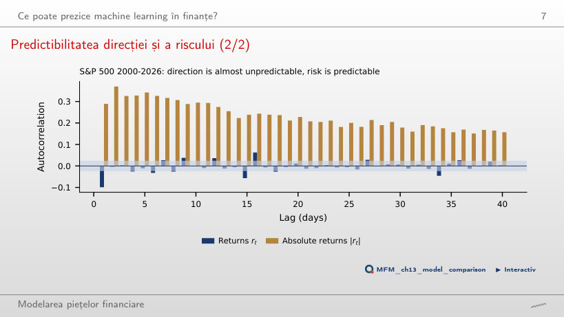
Răspuns
Sînt mari și persistente: 0,29 la lagul 1 și 0,16 la lagul 40, toate 40 deasupra benzii de ±0,024. Direcția este aproape impredictibilă, riscul este predictibil; de aceea ML este cel mai util pentru volatilitate, risc și lichiditate.
Trusa minimă de machine learning
Traiectoria de regularizare LASSO
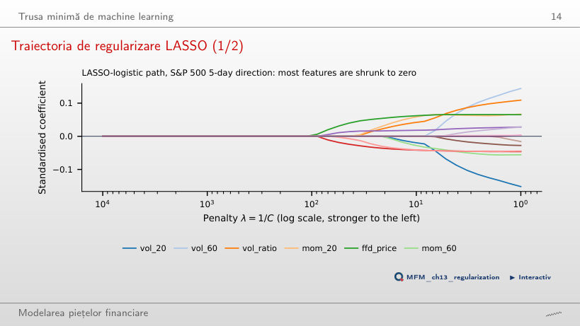
Răspuns
Log-prețul FFD (ffd_price), adică un nivel de preț scalat. La penalizare slabă cele mai mari coeficiente le au caracteristicile de volatilitate, dar toți coeficienții rămîn sub 0,16 în valoare absolută. În CV cu purjare, orice λ la care intră cel puțin o caracteristică dă un AUC între 0,477 și 0,485, sub 0,5.
Caracteristici: diferențierea fracționară și capcana ei
Statistica ADF în funcție de d: S&P 500
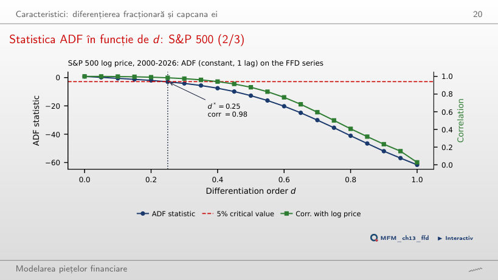
Răspuns
Testul nu o arată. Cu 34 de laguri, alese prin AIC, ADF este −0,72 și nu respinge. Corelația cu log-prețul este 0,98, iar suma ponderilor trunchiate este 0,178: seria conține un random walk scalat.
Etichete: ce învață, de fapt, modelul
Trei bariere: S&P 500 în 2022
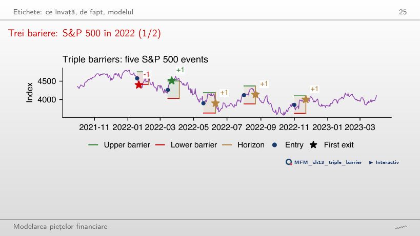
Răspuns
Nu. Se termină la bariera verticală, după 15 zile, peste nivelul de intrare, iar regula semnului le dă +1. Doar evenimentul din martie atinge bariera de profit; cel din ianuarie atinge stop-loss-ul (−1).
Validare onestă
K-fold cu purjare și embargo
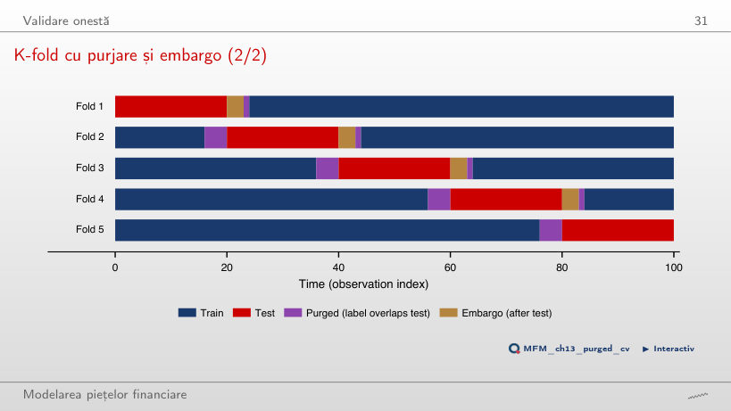
Răspuns
h = 4 înainte de bloc, ale căror etichete se termină în test, și max(h, e) = 4 după el. Embargoul adaugă ceva doar dacă e > h.
Experiment de leakage: o țintă fără predictibilitate
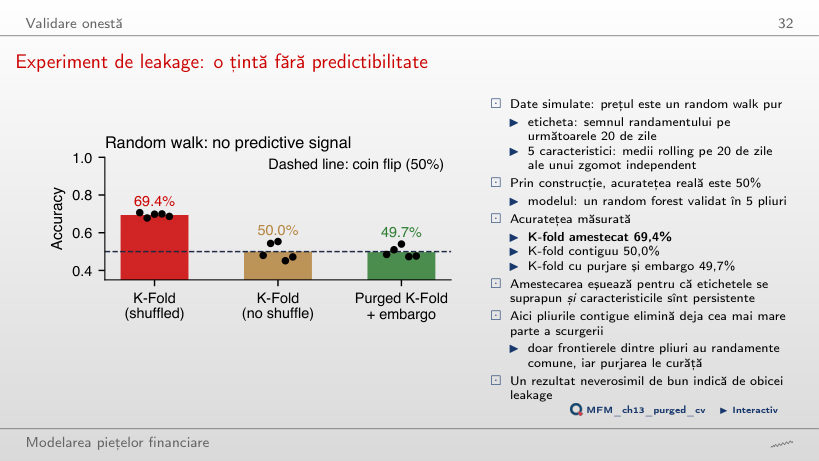
Răspuns
Etichetele pe 20 de zile se suprapun, iar caracteristicile sînt persistente, deci amestecarea pune zile aproape identice în antrenare și în test. Pliurile contigue dau 50,0%, iar purjarea și embargoul 49,7%. Cu h = 2, K-fold amestecat dă 49,9%; cu h = 60 ajunge la 84,5%.
Studiu de caz: predicția S&P 500
Compararea modelelor: mediile pe pliuri
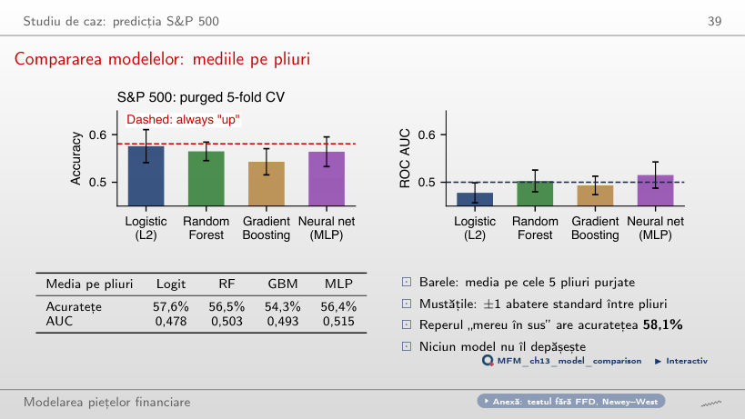
Răspuns
Nu. Reperul „mereu în sus” are 58,1%. Logit-ul prezice „sus” în 98,3% din zile (TP = 3 572, FP = 2 591), deci a învățat regula majoritară. AUC-urile medii pe pliuri sînt între 0,478 și 0,515, aproape de 0,5.
Backtest walk-forward: rezultate
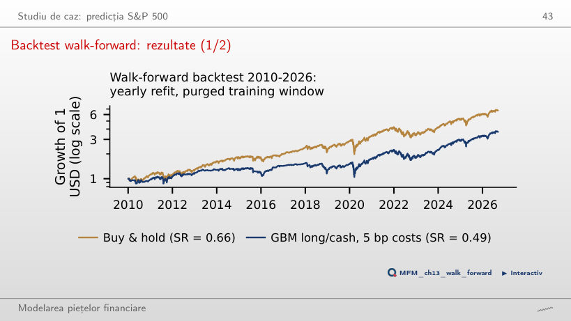
Răspuns
0,66. Expunerea medie a strategiei este 77%. Diferența, −0,17, are p = 0,073 (test HAC Ledoit–Wolf): nu există nici dovezi de abilitate, nici dovezi semnificative că strategia este mai slabă.
Selecție și overfitting-ul backtest-ului
Cea mai bună dintre N strategii fără abilitate
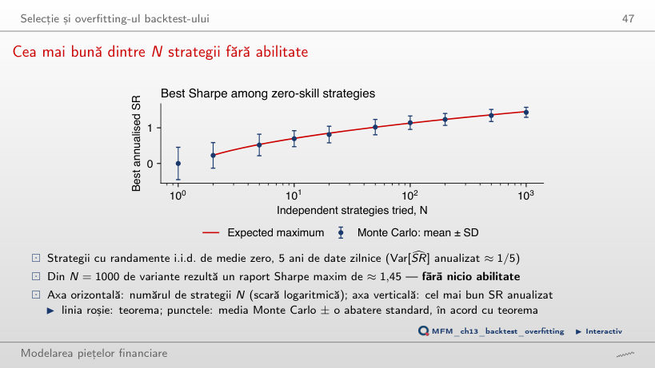
Răspuns
Aproximativ 1,45: teorema strategiei false dă 1,46, iar media celor 200 de simulări este 1,43. Valoarea crește cu N și scade cu lungimea eșantionului, deoarece abaterea standard a SR anualizat este √(1/5) ≈ 0,45.
In-sample (IS) și out-of-sample (OOS): căutare pe grilă pe Bitcoin
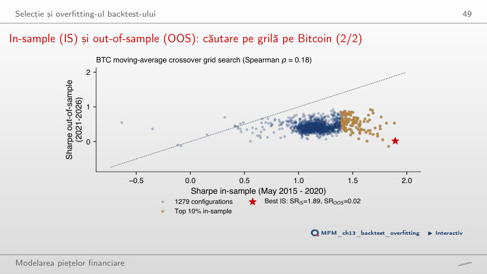
Răspuns
0,02. Corelația de rang Spearman dintre SR in-sample și out-of-sample este 0,18. Mediana out-of-sample a celor mai bune 10% reguli este 0,55, față de 0,42 pentru toate regulile: familia de reguli de trend conține informație, dar optimul selectat reflectă zgomot.
Machine learning pentru inferență
Exemplu rezolvat: puterea predictivă a VIX pentru randamentele S&P 500
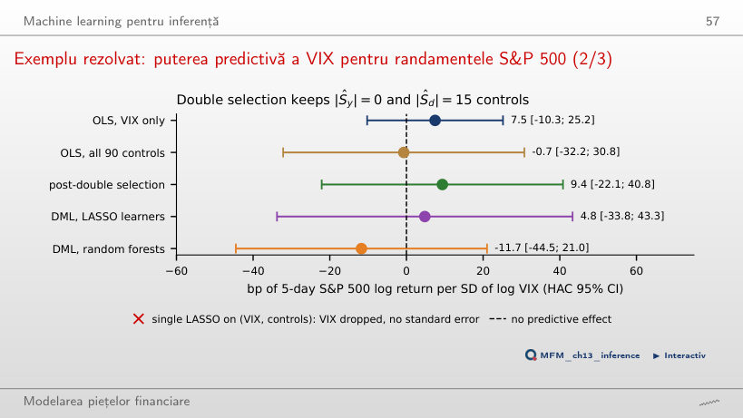
Răspuns
Cele 15 controale care prezic log VIX absorb o parte din variația lui, iar lui d_t îi rămîne mai puțină variație proprie. Selecția dublă dă 9,4 [−22,1; 40,8]. Toate intervalele conțin zero: datele nu permit o concluzie.
Frontiera cercetării: structura înaintea flexibilității
Deep learning în evaluarea activelor: rapoarte Sharpe out-of-sample
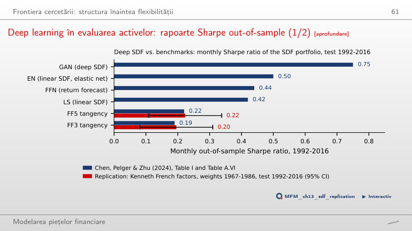
Răspuns
0,22 în 1992–2016, cu intervalul de 95% [0,11; 0,34]; lucrarea raportează tot 0,22. GAN are 0,75, iar SDF-ul liniar regularizat (EN) 0,50, peste rețeaua de prognoză FFN (0,44): structura fără arbitraj contează mai mult decît flexibilitatea.
S&P 500 și VIX: închideri zilnice, ianuarie 2000 – septembrie 2026; Bitcoin: închideri zilnice din septembrie 2014; prețuri EODHD. Factorii Fama–French: Kenneth French Data Library. Rapoartele Sharpe ale modelelor SDF: Chen, Pelger și Zhu (2024), Tabelul I și Tabelul A.VI.